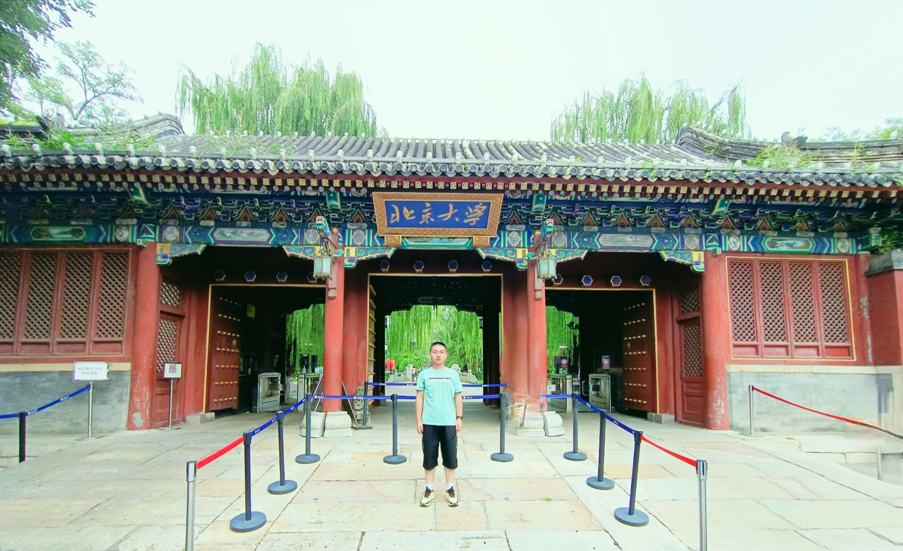

李超，男，彝族，出生于2003年1月3日，家住云南省昆明市安宁市昆钢悠然天地，少年时期就读于昆钢一小、昆钢一中、安宁中学，2021年参加高考，考入北京大学医学部药学院（本硕连读）。
爱好是羽毛球、乒乓球、足球、象棋、游泳、象棋、桌游等；目前是哔哩哔哩视频网站年度大会员，level5，投稿过一个视频（其实就是换了一下bgm）
塔兹米的觉醒参加过2021年博雅问道在成都举办的强基计划集训营。

18岁第一次走出家乡，来到千里之外的首都求学，趁着国庆去了多年来只在电视上看到过的天安门和紫荆城。 ；